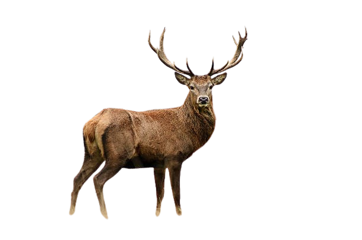
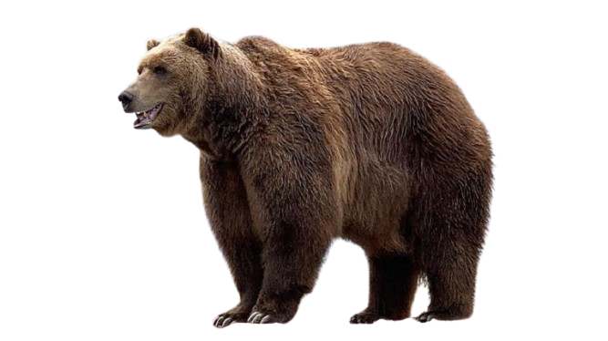

Sección Uno
Este contenido está sobre el parallax

Esta es una sección normal para ocupar espacio
Este contenido está sobre el parallax
Sigue haciendo scroll...
Este contenido está sobre el parallax
Casi llegamos al final...
Este contenido está sobre el parallax
Fin de página